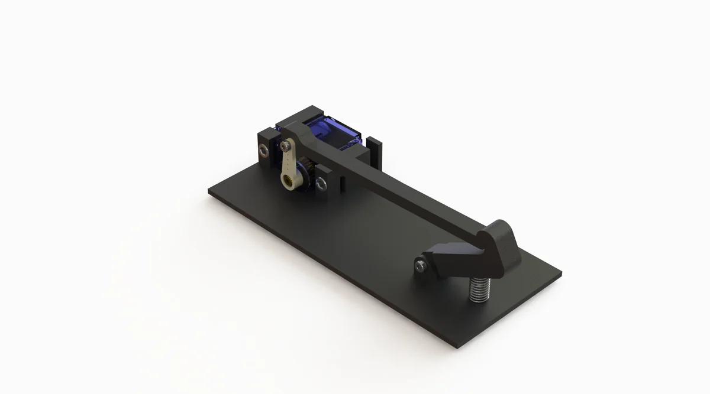
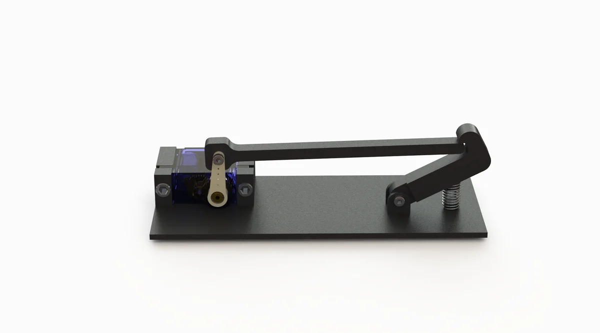
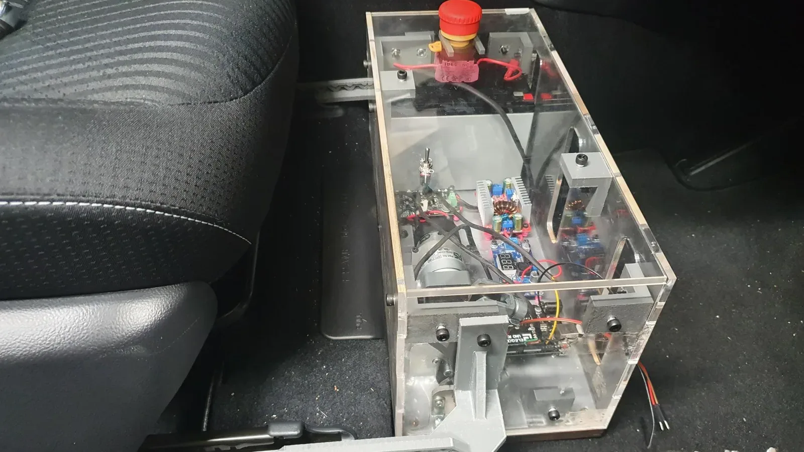
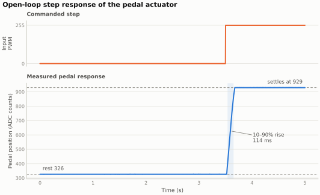
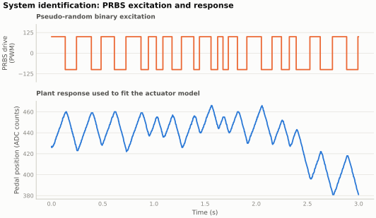
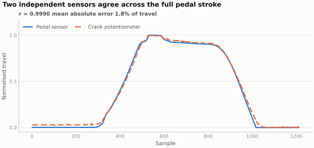
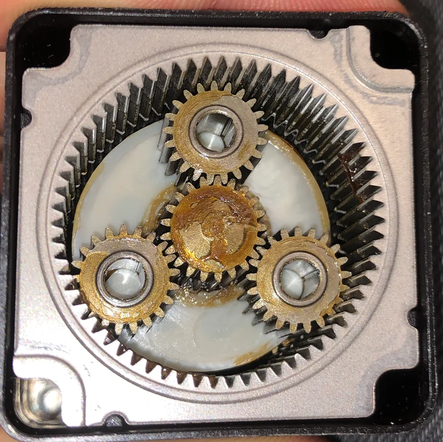
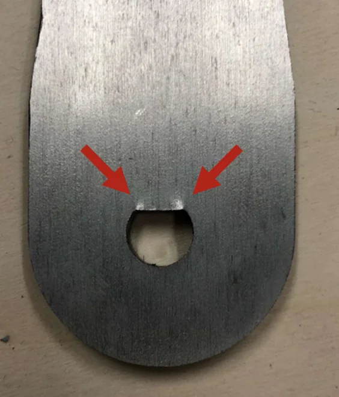

Controls · Embedded systems
A retrofit robot that operates a car's pedals
Instead of replacing a vehicle's control systems, this robot sits where the driver's feet go and works the pedals directly, so a conventional car can be automated without touching its wiring.



The problem
Testing autonomous driving logic normally means a vehicle built for it. That's expensive, and it rules out testing on the enormous number of conventional cars already on the road. A retrofit actuator that presses the pedals is a way around this: it needs no access to the vehicle's own control network, it can be moved between vehicles, and it can be removed entirely afterwards.
A driver's foot is fast, precise enough, and provides its own position feedback. Replacing it mechanically means solving position sensing, force delivery and closed-loop control in a package that fits in a footwell.

Characterising the actuator
The plant here is awkward: a motor driving a linkage against a pedal with its own return spring and a non-linear feel. A controller can't be tuned for that without measuring it first, so the first job was system identification, not control.
I ran a family of excitation signals through the actuator and logged the position response: steps at several amplitudes, ramps, random square waves and pseudo-random binary sequences at a range of dwell times. The PRBS runs are the useful ones for fitting a model, because they excite a broad band of frequencies without driving the actuator beyond what the mechanics can follow.

Trusting the position signal
Closed-loop control is only as good as the feedback. The pedal sensor sits on the pedal itself, so it measures the quantity that matters, but it's also exposed and its zero moves as the mechanism is disturbed. I cross-checked it against a potentiometer on the actuator crank, which is mechanically protected but only measures the pedal position indirectly through the linkage.
Across a full stroke the two agree to within about two per cent of travel. That makes the crank signal a usable redundant channel, and a disagreement between the two a fault indicator, not noise.

What broke
Two things broke, and both were mechanical, not electrical. The gearbox developed enough backlash to be visible in the position trace as a dead band around every direction reversal, which matters because pedal modulation is mostly small reversals, not full-travel sweeps. And a crank arm cracked at the pin slot, where the section is thinnest and the load is highest.


Neither is unusual for a first build, and both only show up once the rig has done real cycles. The instrumentation caught the backlash before the crack appeared: the dead band showed up in the sensor trace while the arm still looked fine.
What I took from it
Measuring the plant before touching the controller is the habit that stuck. It took time up front and saved more later, because tuning stopped being guesswork. It's also why I regret not instrumenting the vine robot earlier.
← All projects